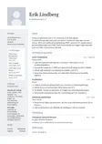
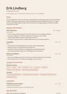
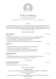

<!-- titel: Skiss funktioner | rum: tran -->
<style>
  /* hjälten: ankarraden som fyra dörrar, en per del */
  .dorrar { display: grid; gap: 12px; width: 100%; min-width: 0; }
  .dr { position: relative; overflow: hidden; isolation: isolate; min-width: 0; border-radius: 24px; padding: 16px; background: var(--vagg-2); color: var(--vagg-ink); border: 2px solid rgba(255, 255, 255, .16); box-shadow: 0 7px 0 var(--vagg-3); }
  .dr-topp { display: grid; grid-template-columns: 1fr auto; gap: 12px; align-items: center; }
  .dr-namn { display: flex; align-items: center; gap: 10px; font-family: var(--disp); font-weight: 800; font-size: 19px; letter-spacing: -0.015em; }
  .dr-namn .dorr { width: 36px; height: 36px; border-radius: 11px; background: var(--vagg-ink); color: var(--vagg); box-shadow: 0 3px 0 rgba(0, 0, 0, .3); }
  .dr-namn .dorr svg { width: 20px; height: 20px; }
  .dr-sak { margin-top: 6px; font-size: 13.5px; line-height: 1.35; color: var(--vagg-mjuk); }
  .dr-tal { font-family: var(--disp); font-weight: 800; font-size: 34px; line-height: 1; letter-spacing: -0.04em; text-align: right; }
  .dr-tal small { display: block; margin-top: 3px; font-family: var(--text); font-weight: 600; font-size: 12px; letter-spacing: 0; color: var(--vagg-mjuk); }
  .dr-matris { display: grid; grid-template-columns: repeat(4, 30px); gap: 4px; }
  .dr-matris span { display: grid; place-items: center; aspect-ratio: 1; border-radius: 8px; background: var(--papper); color: var(--ink-1); }
  .dr-matris svg { width: 58%; height: 58%; }
  .dr-matris .tom { background: none; border: 2px dashed var(--koppar-ljus); color: var(--koppar-ljus); font-family: var(--disp); font-weight: 800; font-size: 15px; }
  .dr svg.ministig { width: 120px; height: auto; overflow: visible; margin-top: 8px; }
  .dr { display: flex; flex-direction: column; }
  .dr-ank { margin-top: auto; padding-top: 14px; }
  .dr-blad { width: 84px; padding: 9px; border-radius: 6px; background: #fff; transform: rotate(3deg); box-shadow: 0 4px 0 rgba(0, 0, 0, .3); }
  .dr-blad i { display: block; height: 4px; margin-top: 5px; border-radius: 2px; background: #DCDAD5; }
  .dr-blad i:first-child { margin-top: 0; width: 46%; background: #9C6A8C; }
  .dr-blad i.m { background: #F4B98A; width: 72%; }
  .dr-ank { display: flex; flex-wrap: wrap; gap: 8px; }
  .dr-ank a { display: inline-flex; align-items: center; gap: 6px; min-height: 44px; padding: 0 14px; border-radius: 13px; background: rgba(255, 255, 255, .12); border: 2px solid rgba(255, 255, 255, .14); color: var(--vagg-ink); text-decoration: none; font-weight: 600; font-size: 14.5px; }
  .dr-ank a svg { width: 14px; height: 14px; opacity: .8; }
  .dr-ank a em { font-style: normal; padding: 1px 7px; border-radius: 999px; background: var(--koppar); color: var(--koppar-text); font-size: 11.5px; font-weight: 700; }
  @media (max-width: 619px) { .dr-topp.smal { grid-template-columns: 1fr; } .dr-topp.smal .dr-matris { grid-template-columns: repeat(4, 34px); } }
  @media (max-width: 899px) { .premium .pris small { display: block; margin: 8px 0 0; } .stigplats { padding-left: 38px; } .mallvagg .stor small { display: block; margin: 10px 0 0; } }
  @media (min-width: 620px) { .dorrar { grid-template-columns: 1fr 1fr; } .dr.stor { grid-column: 1 / -1; } }
  @media (min-width: 1000px) { .dorrar { gap: 16px; } .dr { padding: 20px; } .dr-namn { font-size: 21px; } }

  /* gratis först, sedan vad Premium lägger till */
  .niv { display: grid; gap: 8px; margin-top: 20px; }
  .niv > div { display: grid; grid-template-columns: 82px 1fr; gap: 12px; align-items: start; padding: 11px 12px; border-radius: 16px; background: rgba(255, 255, 255, .08); border: 2px solid rgba(255, 255, 255, .1); font-size: 14.5px; line-height: 1.4; color: var(--vagg-ink); }
  .niv .chip { justify-content: center; }
  .niv.pa-papper > div { background: var(--golv); border-color: var(--kant); color: var(--ink-1); }

  .steg { display: grid; gap: 10px; margin-top: 20px; counter-reset: s; }
  .steg li { display: grid; grid-template-columns: 32px 1fr; gap: 12px; align-items: start; font-size: 15px; line-height: 1.45; color: var(--vagg-mjuk); }
  .steg li::before { counter-increment: s; content: counter(s); display: grid; place-items: center; width: 32px; height: 32px; border-radius: 10px; background: rgba(255, 255, 255, .12); color: var(--vagg-ink); font-family: var(--disp); font-weight: 800; font-size: 15px; }

  .o.full { padding-bottom: 28px; }
  .o.full .o-bild { padding-bottom: 0; }
  .o.full .o-text { padding-bottom: 0; }
  @media (min-width: 1000px) { .o.full { padding-bottom: 64px; } }
  .tunder { display: grid; gap: 14px; margin-top: 28px; }
  @media (min-width: 1000px) { .tunder { grid-template-columns: 1.1fr .9fr; gap: 18px; margin-top: 56px; } }

  /* åtta testtyper, tre nivåer */
  .typer { display: flex; flex-wrap: wrap; gap: 6px; margin-top: 12px; }
  .typer span { display: inline-grid; place-items: center; height: 30px; padding: 0 11px; border-radius: 9px; background: var(--ton); color: var(--ton-ink); font-size: 13.5px; font-weight: 600; }
  .trappa { display: grid; grid-template-columns: repeat(3, 1fr); gap: 6px; align-items: end; margin-top: 18px; }
  .trappa div { display: flex; flex-direction: column; justify-content: flex-end; min-width: 0; padding: 8px; overflow-wrap: anywhere; border-radius: 14px 14px 6px 6px; font-size: 12.5px; line-height: 1.3; color: var(--ink-2); }
  .trappa b { display: block; font-family: var(--disp); font-size: 13.5px; line-height: 1.15; color: var(--ink-1); hyphens: manual; }
  @media (min-width: 620px) { .trappa div { padding: 10px; } .trappa b { font-size: 14.5px; } }
  .trappa .g { height: 92px; background: var(--positiv-mjuk); }
  .trappa .a { height: 124px; background: var(--koppar-mjuk); }
  .trappa .e { height: 156px; background: var(--koppar-ljus); }
  .trappa em { align-self: flex-start; margin-bottom: auto; white-space: nowrap; overflow-wrap: normal; font-style: normal; font-weight: 700; font-size: 11px; padding: 2px 6px; border-radius: 999px; background: rgba(255, 255, 255, .7); color: var(--ink-1); }

  /* resultatet med uppgiftslistan */
  .res-tal { display: flex; align-items: baseline; gap: 10px; }
  .res-tal b { font-family: var(--disp); font-weight: 800; font-size: 56px; line-height: 1; letter-spacing: -0.04em; color: var(--vagg); }
  .res-tal span { font-size: 14.5px; font-weight: 600; color: var(--ink-2); }
  .res-lista { display: grid; grid-template-columns: repeat(8, 1fr); gap: 5px; margin-top: 14px; }
  .res-lista i { display: grid; place-items: center; aspect-ratio: 1; border-radius: 8px; background: var(--positiv-mjuk); color: #1F5C41; font-style: normal; font-size: 12px; font-weight: 700; }
  .res-lista i.m { background: var(--papper); border: 2px solid var(--ink-1); color: var(--ink-1); }
  .fork { margin-top: 14px; padding: 12px 14px; border-radius: 14px; background: var(--golv); font-size: 14px; line-height: 1.45; color: var(--ink-2); }
  .fork b { display: block; color: var(--ink-1); }

  .toner { display: flex; flex-wrap: wrap; gap: 6px; margin-top: 18px; }
  .toner span { display: inline-grid; place-items: center; height: 32px; padding: 0 12px; border-radius: 999px; background: rgba(255, 255, 255, .1); border: 2px solid rgba(255, 255, 255, .16); font-size: 13.5px; font-weight: 600; }
  .toner span.v { background: var(--vagg-ink); color: var(--vagg); border-color: transparent; }

  .cvbild { position: relative; width: 100%; max-width: 470px; margin: 0 auto; padding: 92px 0 0 9%; }
  .cvbild .svav { left: 0; top: 0; transform: rotate(-3deg); }
  .sju { display: flex; gap: 3px; height: 16px; margin-top: 20px; }
  .sju i { border-radius: 5px; background: var(--ljus); min-width: 0; }
  .sju i.t { background: var(--koppar); }
  .sju-text { margin-top: 8px; font-size: 13.5px; color: var(--vagg-mjuk); }

  /* mallväggen: de riktiga mallarna */
  .tva { display: grid; gap: 32px; align-items: center; }
  @media (min-width: 1000px) { .tva { grid-template-columns: 1fr 1fr; gap: 64px; } }
  .mallvagg { position: relative; overflow: hidden; isolation: isolate; border-radius: var(--r-stor); padding: 22px 18px 24px; background: var(--vagg); color: var(--vagg-ink); box-shadow: 0 8px 0 var(--vagg-3); }
  .mallvagg::before { content: ''; position: absolute; z-index: -1; right: -20%; top: -40%; width: 70%; aspect-ratio: 1; border-radius: 50%; background: var(--vagg-2); opacity: .6; }
  .mallvagg .stor { font-family: var(--disp); font-weight: 800; font-size: 64px; line-height: .9; letter-spacing: -0.04em; }
  .mallvagg .stor small { font-family: var(--text); font-weight: 600; font-size: 15px; letter-spacing: 0; color: var(--vagg-mjuk); margin-left: 8px; }
  .mallar { display: grid; grid-template-columns: repeat(4, 1fr); gap: 10px 8px; margin-top: 20px; }
  .mallar figure { min-width: 0; margin: 0; }
  .mallar img { width: 100%; height: auto; border-radius: 4px; background: #fff; box-shadow: 0 4px 0 rgba(0, 0, 0, .3); }
  .mallar figcaption { margin-top: 8px; font-size: 12.5px; font-weight: 600; text-align: center; color: var(--vagg-mjuk); }
  .mallar figcaption b { display: block; margin: 3px auto 0; width: max-content; padding: 1px 7px; border-radius: 999px; background: var(--positiv-mjuk); color: #1F5C41; font-size: 11.5px; }
  .mallar figure:nth-child(odd) img { transform: rotate(-1.5deg); }
  .mallar figure:nth-child(even) img { transform: rotate(1.5deg); }
  .mallvagg .brickor { margin-top: 20px; }
  @media (min-width: 1000px) { .mallvagg { padding: 36px; } .mallvagg .stor { font-size: 88px; } .mallar { gap: 16px 14px; } }
  .fyra { display: grid; gap: 12px; margin-top: 28px; }
  @media (min-width: 620px) { .fyra { grid-template-columns: 1fr 1fr; } }

  /* Jobbsöket: en vägg med tre instrument */
  .jrad { display: grid; gap: 24px; padding: 36px 0; border-top: 3px dotted rgba(255, 255, 255, .22); }
  .jrad:first-of-type { margin-top: 36px; }
  .jrad > * { min-width: 0; }
  .jrad .h2 { font-size: 30px; }
  .jrad p.t { margin-top: 14px; color: var(--vagg-mjuk); font-size: 16px; }
  .jrad .knapprad { margin-top: 22px; }
  .jrad .panel { background: var(--golv); border-radius: var(--r-stor); padding: 22px 16px; }
  .veckomal { display: inline-flex; align-items: center; gap: 8px; min-height: 40px; margin-top: 18px; padding: 6px 16px; border-radius: 999px; background: rgba(255, 255, 255, .1); font-size: 14.5px; font-weight: 600; }
  .veckomal i { width: 14px; height: 14px; border-radius: 5px; border: 2px solid var(--vagg-mjuk); }
  .veckomal i.k { background: var(--koppar); border-color: var(--koppar); }
  .jmer { display: grid; gap: 12px; margin-top: 8px; }
  .jmer a { display: grid; grid-template-columns: 44px 1fr; gap: 4px 14px; padding: 18px; border-radius: 22px; background: rgba(255, 255, 255, .07); border: 2px solid rgba(255, 255, 255, .14); color: var(--vagg-ink); text-decoration: none; }
  .jmer a .dorr { grid-row: span 2; width: 44px; height: 44px; background: var(--vagg-ink); color: var(--vagg); }
  .jmer a b { font-family: var(--disp); font-size: 18px; }
  .jmer a span:last-child { font-size: 14.5px; line-height: 1.4; color: var(--vagg-mjuk); }
  @media (min-width: 1000px) {
    .jrad { grid-template-columns: 1fr 1fr; gap: 64px; align-items: center; padding: 56px 0; }
    .jrad.vand > :first-child { order: 2; }
    .jrad .h2 { font-size: 40px; }
    .jrad .panel { padding: 32px; }
    .jmer { grid-template-columns: 1fr 1fr; gap: 18px; }
  }

  /* LinkedIn: rubriken före och efter, på profilkortet */
  .lk { max-width: 520px; width: 100%; margin: 0 auto; }
  .lk-topp { display: flex; align-items: center; gap: 14px; }
  .lk-av { display: grid; place-items: center; flex: none; width: 60px; height: 60px; border-radius: 50%; background: var(--ton-ink); color: #fff; font-family: var(--disp); font-weight: 800; font-size: 21px; box-shadow: 0 4px 0 var(--vagg-3); }
  .lk-topp b { font-family: var(--disp); font-size: 20px; }
  .lk-topp div span { display: block; font-size: 13.5px; color: var(--ink-3); }
  .lk-ruta { margin-top: 14px; padding: 14px; border-radius: 16px; background: var(--golv); }
  .lk-ruta small { display: block; font-size: 12px; font-weight: 700; letter-spacing: .08em; text-transform: uppercase; color: var(--ink-3); }
  .lk-ruta p { margin-top: 6px; font-family: var(--disp); font-weight: 700; font-size: 16.5px; line-height: 1.3; color: var(--ink-1); }
  .lk-ruta.fore p { color: var(--ink-3); text-decoration: line-through; text-decoration-thickness: 2px; }
  .lk-ruta.efter { background: var(--papper); border: 2.5px solid var(--koppar); }
  .lk-ruta .sok { display: flex; flex-wrap: wrap; gap: 6px; margin-top: 10px; }
  .lk-ruta .sok span { display: inline-grid; place-items: center; height: 26px; padding: 0 9px; border-radius: 8px; background: var(--ton); color: var(--ton-ink); font-size: 12.5px; font-weight: 600; }
  .lk-ruta .sok span.tom { background: none; border: 2px dashed var(--kant-stark); color: var(--ink-2); }
  .lk-pil { display: grid; place-items: center; width: 36px; height: 36px; margin: 8px auto -6px; border-radius: 12px; background: var(--koppar); color: var(--koppar-text); box-shadow: 0 3px 0 var(--koppar-klack); transform: rotate(90deg); }
  .lk-pil svg { width: 18px; height: 18px; }

  .alla { display: grid; gap: 12px; margin-top: 32px; }
  .alla .lankbricka.forst { background: var(--vagg); border-color: var(--vagg-3); color: var(--vagg-ink); }
  .alla .lankbricka.forst .dorr { background: var(--vagg-ink); color: var(--vagg); }
  .alla .lankbricka.forst span:last-child { color: var(--vagg-mjuk); }
  .alla .lankbricka b em { font-style: normal; margin-left: 6px; padding: 2px 8px; border-radius: 999px; background: var(--koppar-mjuk); color: var(--koppar-ink); font-family: var(--text); font-size: 12px; font-weight: 700; vertical-align: 2px; }
  @media (min-width: 700px) { .alla { grid-template-columns: 1fr 1fr; } }
  @media (min-width: 1000px) { .alla { grid-template-columns: repeat(3, 1fr); gap: 16px; } .alla .lankbricka.forst { grid-column: 1 / -1; padding: 22px; } .alla .lankbricka.forst b { font-size: 22px; } .alla .lankbricka.sist { grid-column: span 2; } }

  .prem-rad { display: grid; gap: 28px; }
  @media (min-width: 1000px) { .prem-rad { grid-template-columns: 1fr 1fr; gap: 64px; align-items: center; } }
</style>

<!--@del nav-->

<main>
  <!-- 1. Hjälten: ankarraden är fyra dörrar -->
  <section class="vagg hjalte utan-lyft">
    <div class="bredd">
      <div class="hjalte-rad">
        <div class="hjalte-text">
          <p class="ey">Alla verktyg, en plattform</p>
          <h1 class="h1">Allt du behöver för att landa nästa jobb</h1>
          <p class="varde">Rekryteringstester, CV, personliga brev, jobbmatchning, Jobbcoachen och en LinkedIn-profil som hittas. <b>Byggt för svensk arbetsmarknad.</b> Det mesta provar du gratis.</p>
          <div class="knapprad">
            <a class="knapp" href="#">Skapa konto gratis <svg viewBox="0 0 24 24"><use href="#i-pil"/></svg></a>
            <a class="lank" href="#">Se priset</a>
          </div>
        </div>
        <nav class="dorrar" aria-label="Funktionerna på sidan">
          <div class="dr stor" data-rum="tran">
            <div class="dr-topp smal">
              <div><p class="dr-namn"><span class="dorr"><svg viewBox="0 0 24 24"><use href="#i-tran"/></svg></span>Rekryteringstester</p><p class="dr-sak">Åtta testtyper i tre nivåer. Grundnivån är gratis.</p></div>
              <div class="dr-matris" aria-hidden="true">
                <span><svg viewBox="0 0 40 40" fill="none" stroke="currentColor" stroke-width="3.5" stroke-linejoin="round"><path d="M20 6l15 27H5z"/></svg></span>
                <span><svg viewBox="0 0 40 40" fill="none" stroke="currentColor" stroke-width="3.5"><circle cx="20" cy="20" r="14"/></svg></span>
                <span><svg viewBox="0 0 40 40" fill="none" stroke="currentColor" stroke-width="3.5"><rect x="6" y="6" width="28" height="28" rx="3"/></svg></span>
                <span class="tom">?</span>
              </div>
            </div>
            <div class="dr-ank"><a href="#tester">Rekryteringstester <svg viewBox="0 0 24 24"><use href="#i-ner"/></svg></a><a href="#tester">Personlighetstestet <svg viewBox="0 0 24 24"><use href="#i-ner"/></svg></a></div>
          </div>
          <div class="dr" data-rum="brev">
            <div class="dr-topp">
              <div><p class="dr-namn"><span class="dorr"><svg viewBox="0 0 24 24"><use href="#i-brev"/></svg></span>Personliga brev</p><p class="dr-sak">Skrivna på annonsens krav.</p></div>
              <div class="dr-blad" aria-hidden="true"><i></i><i></i><i class="m"></i><i></i><i class="m" style="width:52%"></i><i style="width:80%"></i></div>
            </div>
            <div class="dr-ank"><a href="#brev">Personligt brev <svg viewBox="0 0 24 24"><use href="#i-ner"/></svg></a></div>
          </div>
          <div class="dr" data-rum="cv">
            <div class="dr-topp">
              <div><p class="dr-namn"><span class="dorr"><svg viewBox="0 0 24 24"><use href="#i-cv"/></svg></span>CV</p><p class="dr-sak">Poäng av 100 och 40 mallar.</p></div>
              <div class="dr-tal" aria-hidden="true">93<small>av 100</small></div>
            </div>
            <div class="dr-ank"><a href="#cv-analys">CV-analys <svg viewBox="0 0 24 24"><use href="#i-ner"/></svg></a><a href="#cv-skapa-mallar">Skapa CV och mallar <svg viewBox="0 0 24 24"><use href="#i-ner"/></svg></a><a href="#linkedin">LinkedIn-profilen <svg viewBox="0 0 24 24"><use href="#i-ner"/></svg></a></div>
          </div>
          <div class="dr stor" data-rum="jobb">
            <div class="dr-topp">
              <div><p class="dr-namn"><span class="dorr"><svg viewBox="0 0 24 24"><use href="#i-jobb"/></svg></span>Jobbsöket</p><p class="dr-sak">Annonserna som passar dig, och koll på varje sökt tjänst.</p></div>
              <svg class="ministig" viewBox="0 0 220 96" fill="none" aria-hidden="true"><path d="M12 84C50 84 54 60 88 56s42-12 64-24 36-16 50-22" stroke="currentColor" stroke-opacity=".55" stroke-width="3" stroke-dasharray="1 8" stroke-linecap="round"/><circle cx="12" cy="84" r="6" fill="var(--vagg-2)" stroke="currentColor" stroke-width="3"/><circle cx="88" cy="56" r="8" fill="#E07A2F" stroke="currentColor" stroke-width="3"/><circle cx="152" cy="32" r="6" fill="var(--vagg-2)" stroke="currentColor" stroke-width="3"/><path d="M202 10V-14" stroke="currentColor" stroke-width="3" stroke-linecap="round"/><path d="M202-14l18 6-18 7z" fill="#E07A2F"/><circle cx="202" cy="10" r="5" fill="currentColor"/></svg>
            </div>
            <div class="dr-ank"><a href="#jobbmatchning">Jobbmatchning <svg viewBox="0 0 24 24"><use href="#i-ner"/></svg></a><a href="#sokta-tjanster">Sökta tjänster <em>Nyhet</em></a><a href="#jobbcoachen">Jobbcoachen <svg viewBox="0 0 24 24"><use href="#i-ner"/></svg></a></div>
          </div>
        </nav>
      </div>
    </div>
  </section>

  <!-- 2. Rekryteringstester, störst -->
  <section class="sekt" id="tester">
    <div class="bredd">
      <article class="o full" data-rum="tran">
        <div class="o-rad">
          <div class="o-text">
            <div class="o-huvud"><span class="dorr"><svg viewBox="0 0 24 24"><use href="#i-tran"/></svg></span><p class="ey">Inför urvalstestet</p></div>
            <h2 class="h2">Rekryteringstester</h2>
            <p class="varde"><b>Den som känner igen uppgiftstypen på testdagen tävlar på lika villkor.</b> Här lär du dig mönstren i de typer de stora urvalstesten använder.</p>
            <div class="niv">
              <div><span class="chip chip-gratis">Gratis</span><span>Grundnivån i alla åtta testtyperna, ett test om dagen, med förklaring efter varje uppgift. Personlighetstestet med 50 påståenden.</span></div>
              <div><span class="chip chip-premium">Premium</span><span>Avancerad nivå och expertnivå, övningsprov mot klockan, det fördjupade personlighetstestet och hela din utveckling.</span></div>
            </div>
            <p style="margin-top:18px">I övningsprovet går klockan på riktigt, i samma format som Matrigma, Alva, SHL, Aon och I-provet, och provet lämnas in automatiskt när tiden är ute. Efter varje uppgift får du förklaringen, inte bara facit, och din utveckling visar när du är redo.</p>
            <ol class="steg">
              <li>Grundnivån visar var du står i varje testtyp.</li>
              <li>Träna på avancerad nivå och expertnivå i din svagaste typ, med förklaring efter varje uppgift.</li>
              <li>Kör övningsprovet mot klockan när du är redo. Automatisk inlämning, resultat direkt.</li>
              <li>Följ din utveckling, test för test.</li>
            </ol>
            <div class="knapprad"><a class="knapp knapp-vit" href="#">Så fungerar det</a><a class="lank" href="#">Personlighetstestet, 20 påståenden utan konto</a></div>
          </div>
          <div class="o-bild"><!--@del matris--></div>
        </div>
        <div class="tunder">
          <div class="kort">
            <p class="ey">Det här ingår</p>
            <h3 class="h3">Åtta testtyper, tre nivåer</h3>
            <div class="typer"><span>Matrislogik</span><span>Figurserier</span><span>Deduktiv slutledning</span><span>Verbalt resonemang</span><span>Numeriskt resonemang</span><span>Talserier</span><span>Spatial förmåga</span><span>Ordförråd</span></div>
            <div class="trappa" role="img" aria-label="Tre nivåer: grundnivån är gratis, avancerad nivå och expertnivå ingår i Premium">
              <div class="g"><em>Gratis</em><b>Grund&shy;nivå</b>ett test om dagen</div>
              <div class="a"><em>Premium</em><b>Avan&shy;cerad nivå</b>träna så ofta du vill</div>
              <div class="e"><em>Premium</em><b>Expert&shy;nivå</b>och övnings&shy;prov mot klockan</div>
            </div>
          </div>
          <div class="kort">
            <p class="ey">Efter testet</p>
            <h3 class="h3">Resultatet, uppgift för uppgift</h3>
            <div class="res-tal" style="margin-top:14px"><b>12</b><span>av 15 rätt på grundnivån</span></div>
            <div class="res-lista" role="img" aria-label="Uppgiftslistan: tolv rätt, uppgift 4, 9 och 13 fel">
              <i>1</i><i>2</i><i>3</i><i class="m">4</i><i>5</i><i>6</i><i>7</i><i>8</i><i class="m">9</i><i>10</i><i>11</i><i>12</i><i class="m">13</i><i>14</i><i>15</i>
            </div>
            <div class="fork"><b>Uppgift 9, förklaringen</b>Varje rad har en triangel, en cirkel och en kvadrat. I tredje raden har alla figurer ett plus. Det som saknas är cirkeln med plus.</div>
          </div>
        </div>
      </article>
    </div>
  </section>

  <!-- 3. Personliga brev -->
  <section class="sekt" id="brev" style="padding-top:0">
    <div class="bredd">
      <article class="o vand" data-rum="brev">
        <div class="o-rad">
          <div class="o-text">
            <div class="o-huvud"><span class="dorr"><svg viewBox="0 0 24 24"><use href="#i-brev"/></svg></span><p class="ey">Personligt brev</p></div>
            <h2 class="h2">Personliga brev</h2>
            <p class="varde"><b>Ett personligt brev som faktiskt svarar på annonsen</b> är det som skiljer din ansökan från de tjugo som skickade samma mall.</p>
            <div class="niv">
              <div><span class="chip chip-gratis">Gratis</span><span>Första brevet, sedan ett var sjunde dag. Alla brev sparas i ditt konto.</span></div>
              <div><span class="chip chip-premium">Premium</span><span>Brev utan tak, nedladdning som PDF och Word, alla 40 mallar och tonen vald åt dig efter annonsen.</span></div>
            </div>
            <p style="margin-top:18px">Klistra in annonsen, så skriver vi brevet utifrån ditt CV och det annonsen frågar efter, i den ton du väljer. Brevet visar vilka av annonsens krav som har fått svar.</p>
            <ol class="steg">
              <li>Klistra in annonsen, eller välj ett matchat jobb.</li>
              <li>Välj ton. I Premium väljer vi åt dig efter annonsen.</li>
              <li>Det personliga brevet svarar på annonsens krav med exempel ur ditt CV.</li>
              <li>Redigera, välj mall och skicka. Nedladdning ingår i Premium.</li>
            </ol>
            <div class="toner" aria-label="Fem toner"><span class="v">Professionell</span><span>Entusiastisk</span><span>Kreativ</span><span>Självsäker</span><span>Balanserad</span></div>
            <div class="knapprad"><a class="knapp knapp-vit" href="#">Så fungerar det</a><a class="lank" href="#">Se personligt brev-exempel</a></div>
          </div>
          <div class="o-bild"><!--@del brevpar--></div>
        </div>
      </article>
    </div>
  </section>

  <!-- 4. CV-analysen -->
  <section class="sekt" id="cv-analys" style="padding-top:0">
    <div class="bredd">
      <article class="o" data-rum="cv">
        <div class="o-rad">
          <div class="o-text">
            <div class="o-huvud"><span class="dorr"><svg viewBox="0 0 24 24"><use href="#i-cv"/></svg></span><p class="ey">CV-analys</p></div>
            <h2 class="h2">CV-analysen</h2>
            <p class="varde"><b>De flesta CV:n sållas bort innan en människa läst dem.</b> Analysen visar varför ditt gör det, och vad du ändrar.</p>
            <div class="niv">
              <div><span class="chip chip-gratis">Gratis</span><span>Läsbarhetspoängen och vad som saknas i alla sju delar, för varje CV. Jobbcoachens förslag en gång, med det tyngsta förslaget öppet.</span></div>
              <div><span class="chip chip-premium">Premium</span><span>Alla förslag, nya förslag efter varje ändring och Ersätt mitt nuvarande CV med ett tryck.</span></div>
            </div>
            <p style="margin-top:18px">Ladda upp som PDF eller Word. Vi går igenom CV:t i sju delar och räknar en läsbarhetspoäng av 100, så att du ser var varje tappad poäng sitter.</p>
            <div class="sju" role="img" aria-label="Sju delar: Kontaktuppgifter 10, Personbeskrivning 15, Erfarenhet 35, Kompetenser 12, Utbildning 8, Språk 5, Datum, ordning och längd 15"><i style="flex:10"></i><i style="flex:15"></i><i class="t" style="flex:35"></i><i style="flex:12"></i><i style="flex:8"></i><i class="t" style="flex:5"></i><i style="flex:15"></i></div>
            <p class="sju-text">Sju delar, hundra poäng. Här tappar Sara sju poäng, i två delar.</p>
            <ol class="steg">
              <li>Ladda upp ditt CV, eller välj ett du redan har sparat.</li>
              <li>Se poängen i dag och vad som saknas, del för del, utmärkt på ditt CV.</li>
              <li>Hämta Jobbcoachens förslag på nya formuleringar.</li>
              <li>Välj de förslag du vill ha och se poängen röra sig.</li>
            </ol>
            <div class="knapprad"><a class="knapp knapp-vit" href="#">Så fungerar det</a><a class="lank" href="#">Se CV-exempel</a></div>
          </div>
          <div class="o-bild"><div class="cvbild"><div class="svav gungar"><div class="stor">93</div><div class="under">av 100 i dag</div></div><!--@del cv-ark--></div></div>
        </div>
      </article>
    </div>
  </section>

  <!-- 5. Skapa CV och mallarna -->
  <section class="sekt sekt-ton" id="cv-skapa-mallar" data-rum="cv">
    <div class="bredd tva">
      <div>
        <div class="sekt-huvud">
          <p class="ey" style="color:var(--ton-ink)">Skapa CV och CV-mallar</p>
          <h2 class="h2">Ett CV som både systemet och rekryteraren läser</h2>
        </div>
        <div class="fyra">
          <div class="kort"><span class="nr">1</span><h3 class="h3">Bygg CV:t steg för steg</h3><p>Du skriver direkt på arket: personuppgifter, profil, erfarenhet, utbildning, kompetenser och språk. Jobbcoachen föreslår formuleringar, tre förslag ingår gratis.</p></div>
          <div class="kort"><span class="nr">2</span><h3 class="h3">40 mallar, 2 gratis</h3><p>Ren struktur som rekryteringssystemen tolkar rätt. Byt mall med ett tryck, innehållet följer med. Linne och Björk är gratis.</p></div>
          <div class="kort"><span class="nr">3</span><h3 class="h3">Foto och LinkedIn där mallen stöder det</h3><p>Välj själv om bilden och profillänken ska med. Standard i Sverige är utan bild. 15 av mallarna har plats för foto.</p></div>
          <div class="kort"><span class="nr">4</span><h3 class="h3">Ladda ner som PDF</h3><p>Utan tak i Premium, en nedladdning på gratisnivån. 26 av mallarna finns också som Word.</p></div>
        </div>
        <div class="knapprad" style="margin-top:28px"><a class="knapp" href="#">Skapa CV</a><a class="lank" href="#">Välj en mall</a></div>
      </div>
      <div class="mallvagg" aria-label="Åtta av de 40 CV-mallarna">
        <div class="stor">40<small>mallar för CV och personliga brev</small></div>
        <div class="mallar">
          <figure><figcaption>Linne<b>Gratis</b></figcaption></figure>
          <figure><figcaption>Björk<b>Gratis</b></figcaption></figure>
          <figure><figcaption>Koppar</figcaption></figure>
          <figure><figcaption>Ritning</figcaption></figure>
          <figure><figcaption>Kalksten</figcaption></figure>
          <figure><figcaption>Terrakotta</figcaption></figure>
          <figure><figcaption>Tidning</figcaption></figure>
          <figure><figcaption>Siluett</figcaption></figure>
        </div>
        <div class="brickor">
          <div class="bricka"><b>2</b><span>gratis: Linne och Björk</span></div>
          <div class="bricka"><b>26</b><span>finns som Word</span></div>
          <div class="bricka"><b>15</b><span>har plats för foto</span></div>
        </div>
      </div>
    </div>
  </section>

  <!-- 6. Jobbsöket: gratis först, sedan Premium -->
  <section class="vagg sekt" data-rum="jobb" id="jobbsoket">
    <div class="bredd">
      <div class="sekt-huvud">
        <div class="o-huvud"><span class="dorr"><svg viewBox="0 0 24 24"><use href="#i-jobb"/></svg></span><p class="ey">Jobbsöket</p></div>
        <h2 class="h2">Jobben hittar dig, och du går förberedd in i intervjun.</h2>
        <p class="varde"><b>Du provar allt här gratis:</b> tre matchade jobb, tio meddelanden till Jobbcoachen och ett intervjuprov om dagen. Sökta tjänster är gratis för alla. Premium lägger till de 25 bästa träffarna, Jobbcoachen så mycket du vill och intervjuprovet utan dagsgräns.</p>
      </div>

      <div class="jrad" id="jobbmatchning">
        <div>
          <h2 class="h2">Matchade jobb</h2>
          <div class="niv">
            <div><span class="chip chip-gratis">Gratis</span><span>Tre träffar, med skälen utskrivna.</span></div>
            <div><span class="chip chip-premium">Premium</span><span>De 25 bästa träffarna.</span></div>
          </div>
          <p class="t">Den som söker på sin vanliga yrkestitel missar jobben som efterfrågar samma kompetens under ett annat namn, i en annan bransch. Vi utgår från dina kompetenser, erfarenheter och utbildningar och matchar dem mot annonserna i Platsbanken, som hämtas tre gånger per dygn. Du ser din senaste sökning och söker om med ett tryck. Från en träff skriver du brevet, sparar annonsen till Ska sökas eller markerar den som sökt.</p>
          <div class="knapprad"><a class="knapp knapp-vit" href="#">Så fungerar jobbmatchningen</a></div>
        </div>
        <div><!--@del traffar--></div>
      </div>

      <div class="jrad vand" id="sokta-tjanster">
        <div>
          <h2 class="h2">Sökta tjänster</h2>
          <div class="niv">
            <div><span class="chip chip-gratis">Gratis</span><span>Logga varje sökt tjänst, spara annonser till Ska sökas, veckans mål och det första uppföljningsmejlet.</span></div>
            <div><span class="chip chip-premium">Premium</span><span>Uppföljningsmejl till varje sökt tjänst och rapport till Arbetsförmedlingen att skriva ut eller kopiera.</span></div>
          </div>
          <p class="t">Håll koll på var varje ansökan står: sökt, kallad till test, intervju, erbjudande. Har det varit tyst i tolv dagar föreslår vi ett uppföljningsmejl. Utkastet öppnas i din egen e-post, vi skickar aldrig något åt dig.</p>
          <p><span class="veckomal"><i class="k"></i><i class="k"></i><i></i>Veckans mål: 2 av 3 sökta</span></p>
        </div>
        <div class="stigplats"><!--@del stig--></div>
      </div>

      <div class="jrad" id="jobbcoachen">
        <div>
          <h2 class="h2">Jobbcoachen</h2>
          <div class="niv">
            <div><span class="chip chip-gratis">Gratis</span><span>Tio meddelanden.</span></div>
            <div><span class="chip chip-premium">Premium</span><span>Fråga så mycket du vill.</span></div>
          </div>
          <p class="t">Fråga vad du vill om intervjun, uppsägningstiden, lönesamtalet eller hur du svarar på ett avslag. Svaren utgår från svensk arbetsmarknad, inte från en amerikansk mall. Jobbcoachen känner till din målroll, ort och bransch och de dokument du själv delar i samtalet.</p>
          <div class="knapprad"><a class="knapp knapp-vit" href="#">Så fungerar Jobbcoachen</a></div>
        </div>
        <div class="panel"><!--@del chatt--></div>
      </div>

      <div class="jmer">
        <a href="#"><span class="dorr"><svg viewBox="0 0 24 24"><use href="#i-jobb"/></svg></span><b>Inför intervjun</b><span>Svara på en intervjufråga och få en bedömning. Ett intervjuprov om dagen är gratis, i Premium finns ingen dagsgräns.</span></a>
        <a href="#"><span class="dorr"><svg viewBox="0 0 24 24"><use href="#i-jobb"/></svg></span><b>Bli upptäckt</b><span>Låt rekryterare hitta dig. Du är anonym tills du själv tackar ja.</span></a>
      </div>
    </div>
  </section>

  <!-- 7. LinkedIn -->
  <section class="sekt sekt-papper" id="linkedin" data-rum="cv">
    <div class="bredd tva">
      <div class="sekt-huvud">
        <p class="ey">LinkedIn-profilen</p>
        <h2 class="h2">Bli hittad på LinkedIn</h2>
        <p class="varde">Rekryterare söker på kompetenser, inte på titlar. Vi skriver om rubrik och sammanfattning så att du hittas när de söker på det du kan, och visar vilka kompetenser som saknas i profilen.</p>
        <p><span class="chip chip-premium">Premium</span> <span class="liten" style="margin-left:6px">LinkedIn-optimeringen ingår i Jobbcoach Premium.</span></p>
        <div class="knapprad" style="margin-top:24px"><a class="knapp knapp-vit" href="#">Så fungerar det</a></div>
      </div>
      <div class="kort lk" aria-label="Exempel: rubriken på Saras LinkedIn-profil före och efter">
        <div class="lk-topp"><span class="lk-av">SL</span><div><b>Sara Lindström</b><span>Göteborg</span></div></div>
        <div class="lk-ruta fore"><small>Rubriken i dag</small><p>Projektledare på Nordanvind Energi</p><div class="sok"><span class="tom">Hittas på: Nordanvind Energi</span></div></div>
        <div class="lk-pil" aria-hidden="true"><svg viewBox="0 0 24 24"><use href="#i-pil"/></svg></div>
        <div class="lk-ruta efter"><small>Rubriken efter omskrivningen</small><p>Projektledare bygg, offentlig upphandling enligt LOU, budgetansvar 40 miljoner</p><div class="sok"><span>projektledare bygg</span><span>LOU</span><span>budgetansvar</span><span class="tom">saknas: BAS-P</span></div></div>
        <p class="liten" style="margin-top:14px">Sammanfattningen skrivs om på samma sätt. Det som saknas hämtas ur annonserna i din bransch.</p>
      </div>
    </div>
  </section>

  <!-- 8. Alla verktyg, samlade -->
  <section class="sekt" id="alla-verktyg">
    <div class="bredd">
      <div class="sekt-huvud"><h2 class="h2">Alla verktyg, samlade</h2></div>
      <div class="alla">
        <a class="lankbricka forst" data-rum="tran" href="#"><span class="dorr"><svg viewBox="0 0 24 24"><use href="#i-tran"/></svg></span><b>Rekryteringstester</b><span>Matrislogik, figurserier, deduktivt, verbalt, numeriskt, talserier, spatial förmåga och ordförråd i tre nivåer, övningsprov mot klockan och inför I-provet.</span></a>
        <a class="lankbricka" data-rum="tran" href="#"><span class="dorr"><svg viewBox="0 0 24 24"><use href="#i-tran"/></svg></span><b>Personlighetstest</b><span>Femfaktormodellen (Big Five): profilen rekryteraren jämför med, och frågorna du lär få.</span></a>
        <a class="lankbricka" data-rum="brev" href="#"><span class="dorr"><svg viewBox="0 0 24 24"><use href="#i-brev"/></svg></span><b>Personligt brev</b><span>Skrivet på annonsen, utifrån ditt CV, i den ton du väljer.</span></a>
        <a class="lankbricka" data-rum="cv" href="#"><span class="dorr"><svg viewBox="0 0 24 24"><use href="#i-cv"/></svg></span><b>CV-analys</b><span>Läsbarhetspoäng av 100 och vad som saknas, del för del.</span></a>
        <a class="lankbricka" data-rum="cv" href="#"><span class="dorr"><svg viewBox="0 0 24 24"><use href="#i-cv"/></svg></span><b>Skapa CV</b><span>Skriv direkt på arket, med förslag för varje del.</span></a>
        <a class="lankbricka" data-rum="cv" href="#"><span class="dorr"><svg viewBox="0 0 24 24"><use href="#i-cv"/></svg></span><b>CV-mallar</b><span>40 mallar som rekryteringssystemen läser, 2 gratis.</span></a>
        <a class="lankbricka" data-rum="cv" href="#"><span class="dorr"><svg viewBox="0 0 24 24"><use href="#i-cv"/></svg></span><b>LinkedIn-profilen</b><span>Rubrik och sammanfattning som rekryterare hittar när de söker.</span></a>
        <a class="lankbricka" data-rum="jobb" href="#"><span class="dorr"><svg viewBox="0 0 24 24"><use href="#i-jobb"/></svg></span><b>Jobbmatchning</b><span>Din kompetens mot annonserna i Platsbanken, med skälen.</span></a>
        <a class="lankbricka" data-rum="jobb" href="#"><span class="dorr"><svg viewBox="0 0 24 24"><use href="#i-jobb"/></svg></span><b>Sökta tjänster <em>Nyhet</em></b><span>Var varje ansökan står, veckans mål och uppföljning. Gratis för alla med konto.</span></a>
        <a class="lankbricka" data-rum="jobb" href="#"><span class="dorr"><svg viewBox="0 0 24 24"><use href="#i-jobb"/></svg></span><b>Bli upptäckt</b><span>Rekryterare hittar dig, anonymt tills du själv tackar ja.</span></a>
        <a class="lankbricka" data-rum="jobb" href="#"><span class="dorr"><svg viewBox="0 0 24 24"><use href="#i-jobb"/></svg></span><b>Jobbcoachen</b><span>Intervjufrågor, uppföljning, avtal och avslag, utifrån svensk arbetsmarknad.</span></a>
        <a class="lankbricka sist" data-rum="neutral" href="#"><span class="dorr"><svg viewBox="0 0 24 24" fill="none" stroke="currentColor" stroke-width="1.75" stroke-linecap="round"><rect x="5" y="3" width="14" height="18" rx="2.5"/><path d="M8.500 7.500h7M8.500 12h1.500M12 12h0M15 12h.500M8.500 16h1.500M12 16h0M15 16h.500"/></svg></span><b>Räkna ut lön och skatt</b><span>Nio kalkylatorer på Skatteverkets tabeller.</span></a>
      </div>
    </div>
  </section>

  <!-- Premium -->
  <section class="sekt" style="padding-top:0">
    <div class="bredd">
      <div class="premium">
        <div class="prem-rad">
          <div>
            <p class="ey">Jobbcoach Premium</p>
            <p class="h2" style="margin-top:12px;color:#fff">Alla verktyg, alla nivåer, alla mallar.</p>
            <div class="pris" style="margin-top:22px">149 kr<small>i månaden, säg upp när du vill</small></div>
            <div class="knapprad" style="margin-top:24px"><a class="knapp" href="#">Se vad som ingår</a></div>
          </div>
          <ul class="bockar">
            <li>Åtta testtyper i tre nivåer, övningsprov mot klockan och det fördjupade personlighetstestet</li>
            <li>Alla CV-mallar, CV-analysens alla förslag, personliga brev och LinkedIn</li>
            <li>Jobbmatchning, de 25 bästa träffarna med skälen</li>
            <li>Uppföljningsmejl till varje sökt tjänst och rapport till Arbetsförmedlingen</li>
            <li>Jobbcoachen, fråga så mycket du vill</li>
            <li>Intervjuprovet utan dagsgräns och hela din testhistorik</li>
          </ul>
        </div>
      </div>
    </div>
  </section>

  <!-- 9. Frågorna -->
  <section class="sekt" id="fragor" style="padding-top:0">
    <div class="bredd">
      <div class="sekt-huvud"><h2 class="h2">Vanliga frågor</h2></div>
      <div class="faq">
        <details open><summary>Hur skiljer sig era verktyg från ChatGPT?</summary><p>ChatGPT är ett allmänt språkverktyg utan kunskap om svensk arbetsmarknad, rekryteringssystemen eller hur rekryterare faktiskt sållar ansökningar. Vi är byggda för just det: vi läser ditt CV, matchar mot annonsens krav och formaterar för de system svenska arbetsgivare använder. Du behöver inte skriva någon instruktion för att få ett bra resultat.</p></details>
        <details><summary>Är det säkert att lämna mitt CV till er?</summary><p>Svaret står kvar ordagrant som i dag. Texter om datalagring ändras inte i den här omgången.</p></details>
        <details open><summary>Hur ofta uppdateras jobbmatchningen?</summary><p>Vi hämtar annonserna från Arbetsförmedlingen och JobTech tre gånger per dygn. Du ser din senaste sökning och söker om med ett tryck när du vill ha de nyaste. Gratis ser du tre träffar, i Premium de 25 bästa, med skälen utskrivna.</p></details>
        <details><summary>Vad händer om jag säger upp prenumerationen?</summary><p>Kontot går tillbaka till gratisnivån när perioden är slut. Allt du skrivit och analyserat finns kvar att läsa och kopiera, men nya uttag följer gratisnivåns gränser. Du kan köpa Premium igen när du vill.</p></details>
        <details open><summary>Hur kommer jag igång gratis?</summary><p>Skapa konto, så är gratisnivån igång direkt: grundnivån i alla åtta testtyperna med ett test om dagen, 2 CV-mallar och en nedladdning, läsbarhetspoängen och genomgången för varje CV, första personliga brevet och sedan ett var sjunde dag, tre matchade jobb och Sökta tjänster. Vill du ha mer ingår allt i Premium, 149 kr i månaden.</p></details>
      </div>
      <div class="knapprad" style="margin-top:36px"><a class="knapp" href="#">Skapa konto gratis <svg viewBox="0 0 24 24"><use href="#i-pil"/></svg></a></div>
    </div>
  </section>
</main>

<!--@del fot-->
